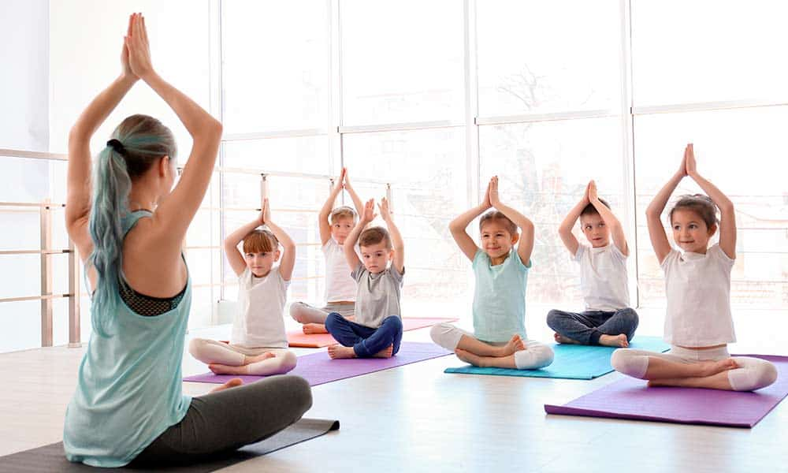

Es una disciplina adaptada y abordada desde el juego que permite que los niños, entre los 4 y 12 años de edad,
conozcan su cuerpo y lo conecten con su mente.
El manejo de la respiración y las diferentes posturas del yoga permiten que los los niños desarrollen
habilidades de concentración, atención, memoria y relajación.
Una clase para niños es muy diferente a la de adultos. “Con los niños se trabaja la meditación activa, por
ejemplo, colorear, moldear plastilina para mantener su concentración”, según Diana Guerrero, instructora de
Yoga Kids y cofundadora de @educacioninspire
El secreto está en que sea muy lúdica y divertida; esto también se logra a través de canciones, juegos e
historias. Una clase de yoga para niños puede durar alrededor de 45 minutos.
